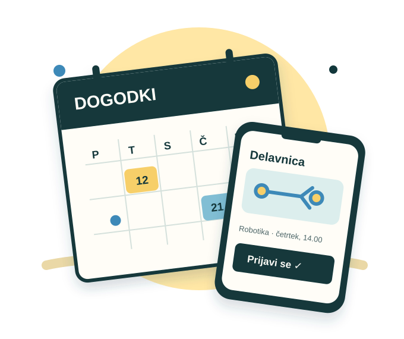

Misli in čuti
»Ali sem zamudil prijavo? So še prosta mesta?«
RPS · SKUPINSKI PROJEKT · SKUPINA 1
SERŠ Event Hub
Vsi dogodki na enem mestu.
Prijava brez iskanja informacij.
Spletna rešitev, s katero dijaki odkrijejo šolske dogodke, preverijo termine in se prijavijo na delavnice.
Spoznaj Jana
01 / PERSONA
Pri metodi Design Thinking začnemo z uporabnikom. Persona pomaga razumeti, kaj dijak potrebuje, kaj ga ovira in kako mu lahko spletna rešitev olajša sodelovanje.
»Rad bi pravočasno izvedel za zanimivo delavnico in se prijavil, preden zmanjka mest.«
Jan obiskuje srednjo tehniško šolo. Zanimajo ga tehnologija, šport in praktične delavnice. Obvestila preverja predvsem na telefonu, vendar se objave hitro izgubijo, plakatov na hodniku pa ne vidi vedno.
Udeležiti se dejavnosti, ki ga zanimajo, in jih uskladiti z urnikom.
Jasen pregled dogodkov z datumom, lokacijo in možnostjo prijave.
Razpršena obvestila, pozno odkrite delavnice in nejasna prosta mesta.
Stran, ki dobro deluje na telefonu in hitro potrdi prijavo.
02 / EMPATIJA
Ko pogledamo dogodek skozi Janove oči, postane jasno, zakaj mora biti pot od informacije do prijave kratka in razumljiva.
»Ali sem zamudil prijavo? So še prosta mesta?«
Plakate, spletne objave in priporočila sošolcev.
Na telefonu išče termin in sprašuje, kako se prijaviti.
Zanesljiv koledar, prosta mesta in potrditev prijave.
03 / PROJEKT
Informacije o dnevih odprtih vrat, športnih dnevih, predavanjih in delavnicah so razpršene po hodnikih in družbenih omrežjih. Dijak lahko zanimiv dogodek hitro spregleda.
SERŠ Event Hub bo dogodke združil v pregleden koledar. Dijaki bodo lahko pregledali termine po kategorijah, izvedeli ključne podrobnosti in se prijavili na delavnice z omejenim številom mest.
To je predstavitev zasnove projekta. Koledar in prijave so predvidene funkcije aplikacije.
Prihajajoči dogodki in njihove kategorije so na enem mestu.
Termin, lokacija in opis pomagajo pri izbiri dogodka.
Enostavna prijava na delavnico in pregled prostih mest.